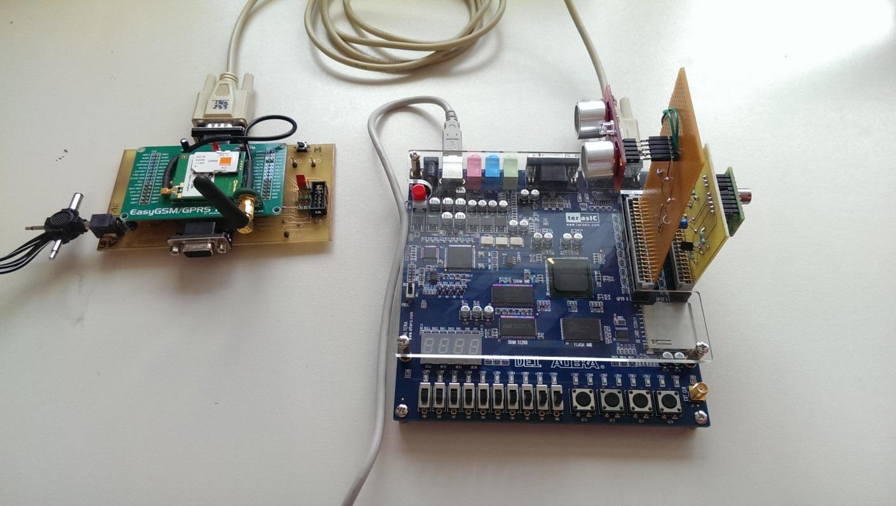

Dans le cadre notre formation à l'ISEN nous devions chaque année réaliser un projet électronique et/ou informatique en binôme.
Contrairement au projet de troisième année les sujets sont cette fois-ci distincts et il se déroule tout au long d l'année scolaire.
Le sujet nous ayant été attribué était la réalisation d'un système télésurveillance et d'alerte.
le mtériel utilisé est une carte de développent DE1 d'Altera où un soft-preocesseur NIOS 2 était implanté.
La création d'un composant VHDL pour gérer le bus I2C était aussi demandée pour communiquer avec un capteur thermique et un capteur à ultrason.
A l'aide de ces deux capteurs, le programme développé en C tournant sur le processeur détectait les écarts de température ou de distance et envoyait un SMS grâce à un module GSM relié par une liaison UART.
cométences mises en œuvre:
- Langage VHDL
- Langage C bas niveau
- Création de circuits électroniques
- Utilisation de différents bus de communcation
- Gestion de projet
télécharger le Rapport du projet pour plus de détails
